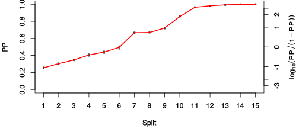

| chain # | burnin | subsample | Iterations (remaining) | command line | subdirectory | directory |
|---|---|---|---|---|---|---|
| 1 | 10000 | 1 | 90000 | /usr/local/bali-phy-3.0-beta2/bin/bali-phy E6_AA_red3_Alpha_all4Manatees_BetaGamma.fas -s 56498 -n E6_AA_Alpha_all4Manatees_BetaGamma_c1 | E6_AA_Alpha_all4Manatees_BetaGamma_c1-1 | /home/willemse/data/trees/BaliPhy/E6 |
| 2 | 10000 | 1 | 90000 | /usr/local/bali-phy-3.0-beta2/bin/bali-phy E6_AA_red3_Alpha_all4Manatees_BetaGamma.fas -s 43531 -n E6_AA_Alpha_all4Manatees_BetaGamma_c2 | E6_AA_Alpha_all4Manatees_BetaGamma_c2-1 | /home/willemse/data/trees/BaliPhy/E6 |
| 3 | 10000 | 1 | 90000 | /usr/local/bali-phy-3.0-beta2/bin/bali-phy E6_AA_red3_Alpha_all4Manatees_BetaGamma.fas -s 89345 -n E6_AA_Alpha_all4Manatees_BetaGamma_c3 | E6_AA_Alpha_all4Manatees_BetaGamma_c3-1 | /home/willemse/data/trees/BaliPhy/E6 |
| P(data|M) = -5666.214 +- 0.184 | Complete sample: 18589 topologies | 95% Bayesian credible interval: 9519 topologies |
Phylogeny Distribution

| Partition support: Summary |
| Partition support graph: SVG |
{kind=link}
| 50% consensus | Newick (+PP) | SVG | |||||
| 66% consensus | Newick (+PP) | SVG | |||||
| 80% consensus | Newick (+PP) | SVG | |||||
| 90% consensus | Newick (+PP) | SVG | |||||
| 95% consensus | Newick (+PP) | SVG | |||||
| 99% consensus | Newick (+PP) | SVG | |||||
| 100% consensus | Newick (+PP) | SVG | |||||
| MAP | Newick (+PP) | SVG | |||||
| greedy | Newick (+PP) | SVG |
{kind=link}
{kind=link}
{kind=link}
{kind=link}
{kind=link}
{kind=link}
{kind=link}
{kind=link}
Alignment Distribution
Partition 1
| Diff | Min. %identity | # Sites | Constant | Informative | ||||
|---|---|---|---|---|---|---|---|---|
| Initial | FASTA | HTML | Diff | 1.4% | 186 | 1 (0.538%) | 180 (96.8%) | |
| Best (WPD) | FASTA | HTML | AU | 14.1% | 377 | 10 (2.65%) | 140 (37.1%) |

Mixing
{kind=link}
| burnin (scalar) | ESS (scalar) | ESS (partition) | ASDSF | MSDSF | PSRF-CI80% | PSRF-RCF |
|---|---|---|---|---|---|---|
| 1969 | 720.5 | 1105.137 | 0.004 | 0.015 | 1.001 | 1.012 |
Projection of RF distances for the first 3 chains3D | Variation of split PPs across chains |
Scalar variables
| Statistic | Median | 95% BCI | ACT | ESS | burnin | PSRF-CI80% | PSRF-RCF |
|---|---|---|---|---|---|---|---|
| prior | -227.6 | (-259.8, -200.2) | 100.9 | 2675 | 878 | 1 | 1.004 |
| prior_A1 | -249 | (-278.3, -225.7) | 125 | 2160 | 1688 | 1 | 1 |
| likelihood | -5649 | (-5667, -5632) | 39.7 | 6801 | 333 | 0.9999 | 1.001 |
| logp | -5877 | (-5907, -5851) | 55.83 | 4836 | 1969 | 1 | 1.003 |
| Heat.beta | 1 | ||||||
| Scale1 | 10.09 | (6.491, 14.71) | 1.023 | 264051 | 55 | 1 | 1.001 |
| S1.F.pi.A | 0.05321 | (0.04262, 0.06473) | 8.021 | 33660 | 335 | 1 | 1.003 |
| S1.F.pi.R | 0.07688 | (0.06322, 0.09105) | 11.18 | 24154 | 275 | 0.9997 | 0.9997 |
| S1.F.pi.N | 0.03438 | (0.02611, 0.04325) | 8.184 | 32990 | 236 | 1 | 0.9991 |
| S1.F.pi.D | 0.05412 | (0.04265, 0.0666) | 8.515 | 31708 | 618 | 0.9997 | 1.005 |
| S1.F.pi.C | 0.05558 | (0.0421, 0.07008) | 7.822 | 34517 | 335 | 0.9999 | 0.9961 |
| S1.F.pi.Q | 0.03924 | (0.03089, 0.04816) | 8.63 | 31288 | 387 | 1 | 1.002 |
| S1.F.pi.E | 0.05754 | (0.0462, 0.0695) | 7.983 | 33822 | 422 | 1 | 0.9973 |
| S1.F.pi.G | 0.05159 | (0.03865, 0.06587) | 9.114 | 29625 | 174 | 1 | 1.001 |
| S1.F.pi.H | 0.03019 | (0.02201, 0.03881) | 7.751 | 34832 | 394 | 0.9996 | 0.9936 |
| S1.F.pi.I | 0.05491 | (0.04412, 0.06604) | 8.417 | 32080 | 541 | 0.9997 | 1 |
| S1.F.pi.L | 0.1109 | (0.09376, 0.1294) | 8.813 | 30637 | 280 | 1 | 0.9984 |
| S1.F.pi.K | 0.04453 | (0.03492, 0.05464) | 8.203 | 32915 | 366 | 1 | 0.9998 |
| S1.F.pi.M | 0.01116 | (0.006761, 0.01613) | 7.941 | 34001 | 667 | 1 | 1.002 |
| S1.F.pi.F | 0.05494 | (0.04313, 0.06753) | 8.258 | 32695 | 606 | 0.9998 | 0.9987 |
| S1.F.pi.P | 0.03177 | (0.02227, 0.0425) | 7.987 | 33803 | 488 | 1.001 | 1.001 |
| S1.F.pi.S | 0.05457 | (0.04436, 0.06557) | 8.179 | 33010 | 276 | 1.001 | 1.001 |
| S1.F.pi.T | 0.05494 | (0.04394, 0.06649) | 8.15 | 33128 | 389 | 0.9997 | 0.9911 |
| S1.F.pi.W | 0.02293 | (0.01505, 0.03158) | 8.228 | 32814 | 213 | 0.9992 | 0.9878 |
| S1.F.pi.Y | 0.05042 | (0.03958, 0.06205) | 8.098 | 33340 | 135 | 1 | 1.002 |
| S1.F.pi.V | 0.05206 | (0.04145, 0.06333) | 8.523 | 31680 | 486 | 0.9995 | 1.008 |
| I1.RS07.meanIndelLengthMinus1 | 9.635 | (5.725, 14.72) | 11.26 | 23979 | 287 | 1 | 0.998 |
| I1.RS07.logLambda | -4.872 | (-5.301, -4.455) | 4.07 | 66337 | 179 | 1 | 1.001 |
| |A1| | 344 | (320, 372) | 374.7 | 720 | 1786 | 0.9906 | 1.012 |
| #indels1 | 27 | (24, 31) | 114.5 | 2357 | 492 | 0.8 | 1.001 |
| |indels1| | 244 | (215, 281) | 87.13 | 3098 | 1845 | 0.9699 | 0.9989 |
| #substs1 | 1094 | (1071, 1113) | 280.8 | 961 | 1782 | 1 | 1.007 |
| Scale1*|T| | 13.11 | (12.2, 14.07) | 2.633 | 102559 | 73 | 0.9999 | 1 |
| |A| | 344 | (320, 372) | 374.7 | 720 | 1786 | 0.9906 | 1.012 |
| #indels | 27 | (24, 31) | 114.5 | 2357 | 492 | 0.8 | 1.001 |
| |indels| | 244 | (215, 281) | 87.13 | 3098 | 1845 | 0.9699 | 0.9989 |
| #substs | 1094 | (1071, 1113) | 280.8 | 961 | 1782 | 1 | 1.007 |
| |T| | 1.299 | (0.8257, 1.859) | 1 | 270003 | 71 | 1 | 1 |